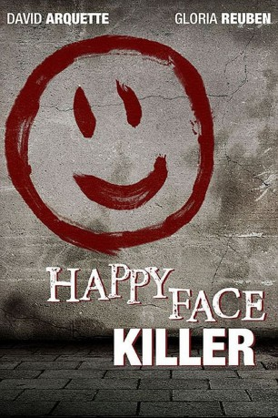
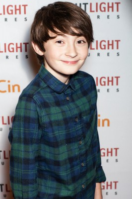

#7402 Happy Face Killer
 
 IMDB-Wertung: 5.6 / 10
IMDB-Wertung: 5.6 / 10  Metascore: 0
Metascore: 0 
Fernfahrer Keith Jesperson steht vor den Trümmern seiner Existenz. Psychisch angegriffen kommt eine lange verdrängte dunkle Seite in ihm zum Vorschein. Übermannt von seinem Trieb begeht er mehrere Morde an jungen Frauen. Immer tiefer dem Wahn verfallend erschafft er sich eine Zweitidentität als Happy Face Killer. Sein Markenzeichen ist ein lachendes Gesicht, geschrieben mit dem Blut seiner Opfer, welches er an den Tatorten hinterlässt. Ihm auf den Fersen: die FBI-Agentin Melinda Gand. Es beginnt ein spannungsgeladenes Katz-und-Maus-Spiel, in dem jeder Schritt der letzte sein kann.
Jahr: 2014
Dauer: 87 Minuten
FSK: 16
Land: Kanada Studio: Concorde Home EntertainmentTonspuren: DTS - ,
Untertitel: Deutsch,
Auflösung: 1080p (1920x1080) Größe: 9584 MB
Genre: Thriller, Drama, Krimi
Regisseur: Rick Bota
Drehbuch: Bavo Defurne
Soundtrack:
Darsteller:
 David Arquette als Keith Hunter Jesperson
David Arquette als Keith Hunter Jesperson Gloria Reuben als Melinda Gand
Gloria Reuben als Melinda Gand Daryl Shuttleworth als Cotton
Daryl Shuttleworth als Cotton- Stefanie von Pfetten als Diane Loftin
- Melissa M. Montgomery als Felicia Boones
- Emily Haine als Sissy Peyton
- Jordana Largy als Candy
- Josh Blacker als Peter
- Mittita Barber als Summer Northern
- Kelly-Ruth Mercier als Delores Pavlinac
- Vanessa Walsh als Taffy Billings
- Peter Flemming als John Jesperson
- Crystal Mudry als Redhead
 Kurt Evans als Levi Mayfield
Kurt Evans als Levi Mayfield- Karyn Mott als Becky Sue Balling
 Peter Bryant als Agent Phillip Kuttner
Peter Bryant als Agent Phillip Kuttner Darren Moore als Bud Skinner
Darren Moore als Bud Skinner Jeremy Raymond als Bartender
Jeremy Raymond als Bartender-  Spencer Drever als Young Keith
- Jody Thompson als Cora Jesperson
 April Telek als Wanda
April Telek als Wanda Chilton Crane als Jo Peyton
Chilton Crane als Jo Peyton- Valerie Sing Turner als Dr. Yanine Tirrell
- Eliza Faria als Keith's Daughter
- Hunter Dillon als Keith's Son
- Michael Meneer als Newscaster #2
- Philip Grant als Polygraph Technician
- David Allan Pearson als Dez Whitman
- Sophie Lui als Newscaster
- Jason Vaisvila als Driver #1
- Todd Daulby als Keith's Father
Datei: X:\2014(G-M)\Happy Face Killer (2014, FSK16, 1920x1080).mkv seit 08.11.2017
Festplatte: HD 2013(I-Z)-2014(A-Z)
 Es gibt insgesamt 136 Filme in der Gruppe '2014(G-M)'
Es gibt insgesamt 136 Filme in der Gruppe '2014(G-M)'